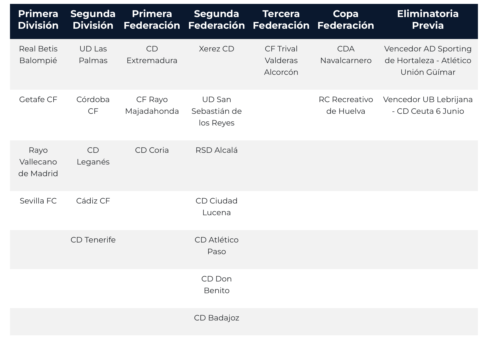

Xerez CD likely to be paired with a Segunda División side, while Recreativo and Lebrijana will face Primera opposition

Image: RFEFThe criterion of geographical proximity suggests that Recreativo de Huelva and the winner of the tie between UB Lebrijana and CD Ceuta will certainly be drawn against a Primera División side, while the Madrid-based lower-division teams will take the other top-flight representatives, leaving the azulinos without that option
The draw for the first round of the Copa del Rey, which will be held next Monday, 5 October, in the Salón Luis Aragonés at the Ciudad del Fútbol, will be governed by the criterion of geographical proximity between the participating clubs, a factor that will decisively shape the pairings in this round.
Recreativo de Huelva and Lebrijana, bound for a Primera opponent
The territorial distribution of the participating teams all but settles that both Recreativo de Huelva and the winner of the preliminary tie between UB Lebrijana and CD Ceuta will certainly face a Primera División representative. As they are the only clubs of standing located in the Andalusian area closest to the big top-flight sides based in the region, the geographical criterion of the draw practically guarantees that top-level tie for both teams.
The Madrid teams, candidates for the other Primera ties
The concentration of clubs based in the Community of Madrid among the lower-division participants suggests, for its part, that the remaining Primera División representatives will be paired with sides such as the winner of the preliminary tie between AD Sporting de Hortaleza and Atlético Unión Güímar, CF Trival Valderas, CDA Navalcarnero or AD Alcorcón, all of them located in the Madrid area.
Xerez CD, with no option of a Primera opponent
This twofold geographical circumstance leaves Xerez CD practically without the option of drawing a top-flight team, as the closest slots are already taken by the Andalusian and Madrid clubs mentioned above. Everything therefore points to the azulinos having to settle for a Segunda División opponent in this first cup round.
Waiting for the final draw
The final composition of the draw groups will in any case continue to depend on the outcome of the preliminary round on 3 and 4 October, so we will have to wait for the coming days to know exactly who Xerez CD will face in its Copa del Rey campaign.
🇪🇸 Leer en español ← Back to home